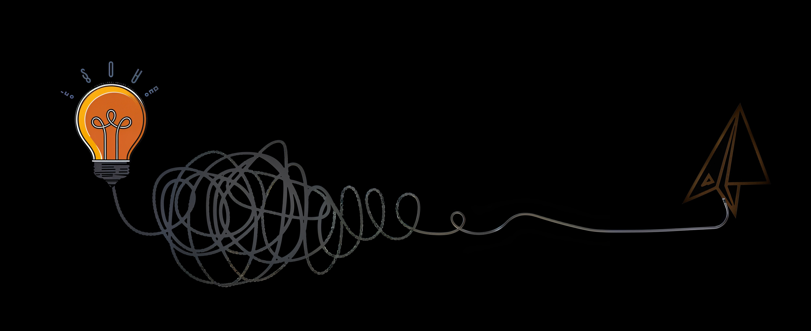

Impulso a líderes de negocios y a sus equipos a crecer de forma rentable, productiva y eficiente — desde una visión sistémica que integra estrategia, procesos, personas, tecnología y resultados.
Soy consultora empresarial, estratega y mentora de liderazgo comercial. Mi pasión es desafiar y motivar a los líderes de negocios a desarrollar mentalidad emprendedora y elevar sus competencias, para que se conviertan en líderes catalizadores de transformación de sus negocios y equipos.
Consultoría, mentoring, coaching y formación que integran estrategia, talento, liderazgo e innovación en la gestión comercial phygital.
Una ruta en cinco etapas bajo el ciclo Crear · Medir · Aprender para potenciar el crecimiento rentable, productivo y eficiente.

 Liderazgo
LiderazgoEl crecimiento no empieza en las ventas, empieza en el liderazgo. Tres cambios de mentalidad para transformar tus resultados.
Leer artículo → Innovación
InnovaciónDe las ideas a los resultados. Cómo aplicar las cinco etapas para escalar y rentabilizar tus oportunidades comerciales.
Leer artículo → Estrategia
EstrategiaPor qué los negocios que crecen de forma sostenible no optimizan partes aisladas, sino el sistema completo.
Leer artículo →Si estás listo para reconfigurar tu liderazgo y tus resultados comerciales, demos el primer paso.
Agenda una conversación →